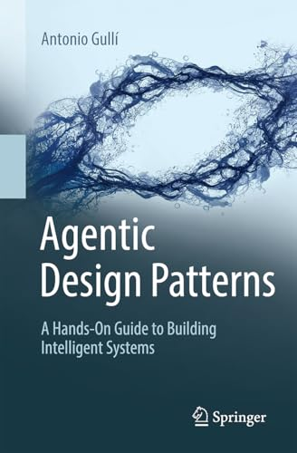

Writing / Book review
Agentic Design Patterns: A Pattern Vocabulary for Autonomous Systems
I read Gulli's 21 agentic design patterns and rate it 4.5: a useful shared vocabulary for agent builders, repetitive in places, but the strongest single desk reference for the field.

- Book
- Agentic Design Patterns: A Hands-On Guide to Building Intelligent Systems
- Author
- Antonio Gulli
- Publisher
- Springer, 2025
- ISBN
- 9783032014016
- Assessment
- ★★★★½ 4.5/5
provisional, based on public materials
VerdictA useful pattern reference for agent builders, strongest as a shared vocabulary for design reviews, not a framework tutorial.
Antonio Gulli's Agentic Design Patterns is the rare technical book I finished with a shorter list of arguments and a longer list of names. Gulli is a Senior Director at Google in the Office of the CTO, and Springer Cham published the book in late October 2025, ebook 30 October, softcover 31 October, 427 pages by the Springer count, ISBN 9783032014016. Some retail listings say 470 to 472 pages, which looks like front matter doing the heavy lifting. The premise is simple and I liked it: 21 agentic design patterns, one chapter each, from Prompt Chaining, Routing, Parallelization, and Tool Use through Multi-Agent Collaboration, Self-Correction, memory, guardrails, evaluation, and operational control, each a reusable building block for agents that perceive, decide, and act on their own, with hands-on code and notebooks.
I came to this book after building agents the messy way, wiring a model to a tool, watching it do something clever, then watching it do something expensive. Agent writing right now is uneven: either a framework manual tied to one library and one release cycle, or a high level survey that never shows how to structure a real system. A pattern book sits between those two. It names recurring solutions, says what problem each one solves, states the trade-offs, and leaves the implementation to the reader. For a field still sorting out its vocabulary, that is genuinely useful, as long as the patterns are clear enough to use in a real design discussion.
Twenty-one patterns is a smaller catalogue than the other patterns book on this site, and that is an advantage. The 21 comes from the Springer record for this book. The 30 comes from the site editorial log for Machine Learning Design Patterns, which records its 30-pattern count.
A smaller catalogue is easier to hold in mind: I can learn twenty-one names and use them in a review without a reference sheet, which is more than I can say for most frameworks I have used. The question is whether each pattern earns its place, and whether the book states when not to use it.
What a design pattern means for agents
In plain terms, a design pattern is a named, reusable fix for a problem that keeps showing up. It is not a library or a finished system. It is a description of a structure, the forces that make the problem hard, what happens if that structure is picked, and when a different structure would serve better. A pattern earns its name when I can spot it in more than one system, when its trade-offs can be stated without hedging, and when a team can use the name in conversation and know what is meant.
For agents, that discipline is harder to keep, because the parts move: a model can change behaviour after an update, a tool can return a different schema, a retrieval source can be refreshed. So a pattern for agents has to describe a loop, a decision point, a source of state, and a point where control passes back to a human or to a check. Gulli takes this seriously, describing his patterns as building blocks for agents that perceive, decide, and act on their own.
I read each pattern as an answer to a question a design review would ask. An agent answering from internal documents raises questions about source choice, stale sources, and disagreement between retrieved material and the model's prior answer. An agent acting for a user raises questions about pre-action checks, records, and reversibility. When the book helps me ask those questions, it is doing its job.
The risk with any pattern catalogue is a list of names with no guidance on picking between them. One chapter per pattern helps only if each chapter states its preconditions, its neighbours, and its cost, and the order here makes sense: core patterns first, then coordination, then control.
A pattern is most useful to a reader who has already built something simple and felt its limits. To a reader who has not, the catalogue can feel abstract. To a reader who has built several agents, some patterns will feel familiar under different names, and the value is standardisation: I can point to a named pattern in a review and compare two implementations on equal terms. The companion notebooks are meant to close that gap by giving each pattern a runnable form, though I would still check current tool versions before running them, since agent libraries change fast.
The core patterns
The four patterns named first in the book, Prompt Chaining, Routing, Parallelization, and Tool Use, are the core of it, and they show up in almost every agent system, whether or not the builder calls them by those names.
Prompt Chaining breaks a task into steps, with the output of one step feeding the next. The win is traceability: when a result is wrong, the intermediate outputs show where the error crept in. The cost is that errors compound, and a chain that is too long gets brittle. A good treatment covers how to validate an intermediate result, when to stop a chain and ask for clarification, and when a chain should give way to a tool call that returns a structured result.
Routing is the call about which path a request should take. In a simple system, a classifier sends a question to one of several prompts or tools. In a bigger system, a model decides whether a request needs retrieval, a calculation, a search, or a human. The core trade-off is accuracy against cost. A router that is too simple sends requests down the wrong path, and one that is too elaborate adds latency and cost to every request. A pattern treatment should say how to measure routing quality and how to fall back to a safe default instead of guessing.
Parallelization splits work so independent parts can run at the same time. In agent systems, that often means calling several tools or several model prompts at once, then combining the results. The win is speed and sometimes breadth, since a system can consult more than one source before answering. The cost is coordination. Results arrive at different times, in different formats, with different levels of confidence. A system that parallelises without a clear rule for combining results can produce an answer that sounds smooth and is internally inconsistent. A careful treatment covers how to decide which parts are truly independent, how to set a timeout, and how to handle a partial failure.
Tool Use turns a language model from a text generator into an agent that can act on the world. The model picks a tool, supplies arguments, gets a result, and decides what to do next. The design questions are practical. How is a tool described so the model picks it correctly. How are arguments validated before a call that changes state, sends a message, or moves money. How is a tool failure reported back in a form the model can use to recover. How is the tool list kept manageable, so the model is not shown a long list of similar options.
These four patterns are where the hands-on approach matters most. How a chain validates a step, how a router logs its decision, how parallel calls get merged, and how a tool call gets validated are details learned faster from runnable code than from prose. The companion notebooks are where the pattern becomes concrete. And these patterns are not independent: a system often routes to decide whether to chain or call a tool, parallelises inside a chain step, and uses tool use as the action at the end of a chain.
The table below summarises the named patterns from the book's scope. It is a reading aid, not a summary of chapters in detail.
| Pattern | When it helps | Watch out |
|---|---|---|
| Prompt Chaining | A task splits into clear steps with checkable outputs | Errors compound, and a long chain gets brittle |
| Routing | Requests fall into distinct kinds with different tools | A wrong route is a new failure, so keep a safe fallback |
| Parallelization | Parts of the work are independent and can run together | Merging results needs a rule, plus a timeout |
| Tool Use | The agent must act on the world, not only generate text | Validate arguments and results, and log the call |
| Multi-Agent Collaboration | The work splits into roles with different tools or context | Handoffs and shared state become new failure points |
| Self-Correction | The output can be checked against a clear criterion | A model can share the blind spot that caused the error |
| Memory | Later steps need earlier context, facts, or actions | Stale or mistaken memory gets treated as fact |
| Guardrails | Actions need limits, checks, or human approval | Checks that run after the action are too late |
| Evaluation | The question is whether the system works, not only whether it runs | Final output alone hides bad trajectories |
| Operational control | The system runs in the real world with real consequences | Without limits and monitoring, a loop can run without bound |
Multi-agent collaboration and self-correction
Multi-agent collaboration moves the book from a single agent with tools to a system of agents with roles. That is a real jump, not just a single agent cut into pieces: it adds coordination, communication, shared state, and responsibility. A common shape assigns roles, one agent planning, another retrieving, another drafting, another checking. The win is specialisation. The cost is that the interfaces between roles become a source of failure, as an agent can misunderstand the output of another, proceed on an unstated assumption, or wait for an input that never arrives. A pattern treatment should cover role definitions, handoff specs, and behaviour when one agent fails.
Self-correction is close by, because a system that cannot check itself will amplify its own errors. A model can be asked to review its output against criteria, to test a proposed action before taking it, or to compare its answer with a retrieved source and revise where they disagree. The limit is that a model reviewing its own work can share the same blind spot that produced the error. A good treatment separates self-correction from independent verification, where a separate check, a tool, a rule, or a different model, tests the result. In a multi-agent system one agent can review another, but it needs criteria, access to the same sources, and a way to state disagreement clearly. Multi-agent systems also cost more and are harder to debug, so the justification has to come from the task, not enthusiasm for more agents.
The self-correction cycle is simple to state and easy to skip in practice: try something, check it, fix what failed, and try again. The loop below is the shape of that cycle. The hard part is the check. Without a clear criterion, the loop just repeats the same mistake with more confidence.
Memory and guardrails
Memory in an agent system is not one store. It can be conversation history, a summary of earlier sessions, retrieved facts, and the record of actions already taken. Each form has a different lifetime and a different risk. History grows fast and can carry a mistaken assumption forward. A summary is compact but can lose detail or hold an error that then gets treated as fact. Retrieved facts can be stale or contradictory. A pattern treatment should cover what to remember, how long to keep it, how to update it when new information contradicts it, and how to forget, with separation by user, task, and sensitivity, so information from one context does not leak into another.
Guardrails are the limits that keep an agent inside its intended scope: input filters, output checks, tool restrictions, rate limits, and human approval steps. The useful ones check an action before it is taken, require confirmation for irreversible actions, and log what was checked and allowed. Memory and guardrails are connected, since memory can carry forward an instruction that no longer applies, or information that should not be shared with another user. Guardrails therefore need to apply to memory too, checking what gets retrieved, limiting what gets stored, and letting the user inspect and correct what the system remembers.
Evaluation and operational control
Evaluation for agents is harder than evaluation for a single model on a fixed test set. An agent can take different paths to the same answer, call tools in different orders, and produce an answer that is right in substance but different in form from a reference answer. A useful approach needs several layers. It needs to check the final output against criteria that matter for the application, such as correctness, completeness, and grounding in a source. It needs to check the trajectory: the steps taken, the tools used, whether the system recovered from a failure, and whether it stayed within its limits. It also needs to check cost and latency, because a right answer that is slow and expensive may not be usable.
Operational control covers the running of the system once it is deployed: logging, monitoring, alerting, and the ability to pause, roll back, or change a configuration. It includes limits on cost, steps, and tool calls, so a loop does not run without bound, and a human in the loop for actions that are irreversible, high value, or outside the tested scope. Evaluation tells a team what the system does on a test set. Operational control tells a team what it does in the real world, where inputs are messier and failures have consequences. A system that is evaluated well but not monitored can fail quietly.
Strengths, limitations, and what it will not teach
The main strength, as I read it, is coherence. Twenty-one patterns, one chapter each, in a progression from core patterns to collaboration, memory, guardrails, evaluation, and control, give a reader a map of the field rather than a pile of disconnected techniques. The second strength is the hands-on intent: patterns described only in prose are easy to agree with and hard to apply, while code and notebooks, if kept current and including failure cases, give a reader a place to test the pattern and see where it breaks.
The limits follow from the same scope. A pattern book is not a framework tutorial, and a reader who wants step by step instructions for one library will need another source. Nothing in the book states how current the companion code is, so I treat it as a reference for design and review, and check tool versions before running the notebooks.
The map below places the pattern groups by effort to get right and depth of design thinking. This is my placement, opinion not measurement, intended as a starting point for discussion, not as data. Tool use and routing sit lower, because a first version can be built fast. Self-correction and memory sit higher, because the check is the hard part. Multi-agent work sits furthest out, because coordination is where the effort piles up.
The placement is approximate: a simple tool with a dangerous side effect needs more care than a complex multi-agent setup with none. The map is a starting point for discussion, not a conclusion.
The honest part, then. The things that make the book useful are the same ones I praised above: all 21 patterns in one place, a shared vocabulary and a desk reference, a consistent chapter template, and the "At a Glance" summary at the end of each pattern, which is the part I actually use. The code is framework-agnostic, with examples across LangChain and LangGraph, CrewAI, and Google ADK, so the book does not go stale the moment one library ships a breaking change.
The biggest flaw, and I will not soft-pedal it, is repetition. The same idea gets stated four times in a chapter, intro, At a Glance, Key Takeaways, Conclusion, and the book could be a quarter of its length. I had the same thought around pattern eight, when I caught myself skimming a summary of a summary. The repetition is real, and the template that makes it a good reference also makes it a padded read. My defence is narrow but honest. The repetition is the price of the reference format, and the "At a Glance" pages are the reason the book stays on my desk instead of my shelf. If the reader wants a tight essay, this is the wrong book; if the reader wants a place to look up a pattern during a design review, the padding is the tax and the lookup is the product.
The prose is flat in places, and some chapters read as if a template did the writing. I do not know how the book was produced, and I will not guess, but the flatness is real and it is fair to call out: a book about agents that reads like it was assembled by one is a joke the author did not intend. Whether a human or a model typed it, the structure holds together and the patterns are coherent, so I care more about whether the patterns work than about who typed the sentences.
Two more criticisms deserve a straight answer. The book is shallow on when and why, and short on trade-offs, and I agree: I found myself writing my own "do not use this when" notes in the margins, because the chapters are stronger on what a pattern is than on when to leave it alone. And the code predates LangChain 1.0, so expect import errors against current versions. That is the tax on any 2025 framework book; the framework-agnostic framing softens it but does not remove it. Pin the versions or read the code as illustration. Finally, the A2A chapter reads as advertising for Google's Agent2Agent protocol. It does. Gulli works at Google, the chapter reads like a product pitch, and it is the weakest chapter in the book. I treat it as a protocol overview with a sales accent, not as a pattern chapter, and the book survives it.
Most of these patterns are obvious once named, and that is the point of naming them: a shared name turns an obvious idea into something a team can argue about in a review, and a book that collects 21 of them in one place with a consistent template is worth keeping, even at four times the length it needed. It did not change my life. It changed how I run design reviews, which is a smaller claim and a more useful one.
A practical study plan and exercise
The way I would work through the book is in four stages. First, read the core patterns and build one small agent using each once, logging the routing decision, tool arguments, and validation result. Second, add memory and a guardrail, then test it with a stale fact, a contradictory source, and a request that should be refused or confirmed before acting. Third, split one task across two agents with a reviewer, and compare result, cost, and latency with the single-agent version on the same cases. Fourth, build a small evaluation set of representative, difficult, and adversarial cases, run it before and after each change, and record failures by cause.
The test set should stay small and fixed, so the comparison stays honest. If the cases change every time, it is not possible to tell whether the pattern helped or the test became easier.
Who should read it and how it compares
This book fits best for a reader who has built a first agent and now needs to make it reliable, reviewable, and operable: engineers adding tools, memory, or checks to an existing system, technical leads reviewing agent designs, and researchers who need a shared vocabulary for comparing systems. It is less suited as a first introduction to language models, and less suited as a manual for one framework. Compared with AI Agents in Action, already reviewed on this site, the difference is one of purpose. That book, reviewed in AI Agents in Action, is framework and how-to, focused on building working agents with specific tools. This book is the pattern vocabulary and reference that sits above any one framework, and it works best alongside a hands-on guide rather than instead of one. Compared with Machine Learning Design Patterns, reviewed in Machine Learning Design Patterns, the parallel is closer: that 2020 book gave machine learning work a shared set of named solutions for data, modelling, and serving, and this book attempts the same for agents.
Further reading and public sources
- Springer catalog entry for Agentic Design Patterns: https://link.springer.com/book/10.1007/978-3-032-01402-3
- AI Agents in Action, reviewed on this site: AI Agents in Action
- Machine Learning Design Patterns, reviewed on this site: Machine Learning Design Patterns
Verdict
I rate Agentic Design Patterns 4.5 out of 5, and that is my own judgment, not a hedge. Its value is in naming recurring solutions, stating their trade-offs, and placing control, memory, guardrails, evaluation, and operation alongside the core patterns, rather than treating them as afterthoughts. Its limits are the limits of the form, a reference that needs pairing with hands-on building, current tooling, and a test set of the reader's own. The repetition charge is fair, and I have made it myself above. I still keep the book within reach, because the pattern vocabulary and the consistent template are what I actually use in design reviews, and a reference earns its rating by being reached for, not by being read once. The repetition is real, the A2A chapter is a pitch, and some of the code will need version pinning. None of that changed my mind.

Shivam Negi is an AI engineer and Principal Data Scientist who works on evaluating voice agents, small language models, and applied ML. More about me